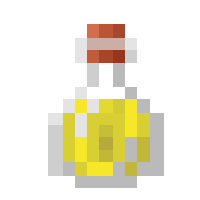

Inaccuracy
This Potion will make everything you do slightly inaccurate and you speech will be slurred
Home
Healing
tba

ingredients
13.9 grains of wheat
Water sourced from the Sargasso sea
Bottled electricity
Hemlock
Banana juice